Welcome to the Access Oxbridge portal. This is where you book sessions, talk to your mentor, watch recordings and read your session reports.
This guide shows you what each section is for and how to use it. You don't need to read it all at once. Keep it handy for the first few times you log in.
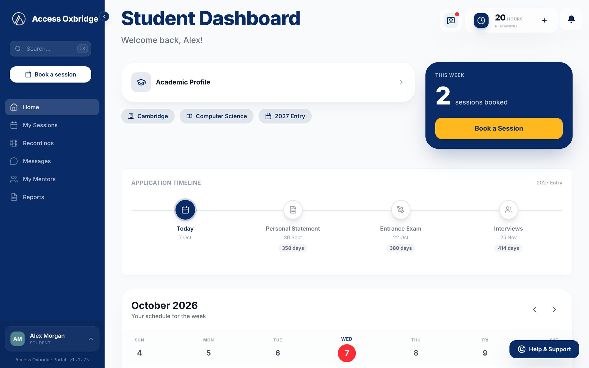
What's inside
Getting started
Finding your way around
Home
My Profile
My Mentors
Session hours
Messages
Booking a session
My Sessions
After a session
Recordings
Reports
Settings
Getting help
Common questions
1Getting started
Go to the portal and log in with the email address and password we sent you. If you forget your password, click Forgot password? on the login page and we'll email you a link to set a new one.
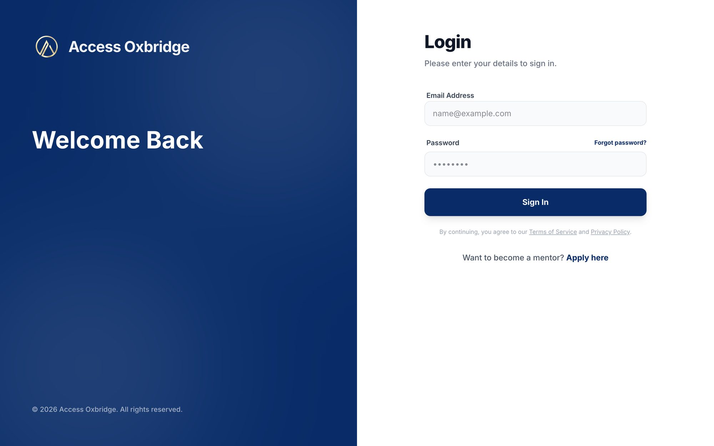
The login page
Your first week checklist
Work through these steps after your first login. Each one is explained in more detail later in this guide.
Log in with the details we sent you.
Complete My Profile in full, including your subjects and predicted grades. We use it to match you with the right mentor.
Check your timezone. Every session time in the portal is shown in it.
Add a profile photo so your mentor can put a face to your name.
Say hello to your mentor in Messages once you're matched.
Book your first session by sending your mentor at least 3 times that suit you.
Good to know
The portal works in any up-to-date web browser on a computer, tablet or phone. Bookmark it so it's easy to find, and keep your password to yourself.
2Finding your way around
Every page has the same layout. Here is what each part does.
1234567
1Menu. Links to every section: Home, My Sessions, Recordings, Messages, My Mentors and Reports.
2Book a session. Start a booking from any page.
3Check-in. Every few sessions a short check-in appears here. A red dot means one is waiting for you.
4Hours remaining. How many session hours you have left. Click it to ask for more.
5Notifications. Updates such as a confirmed session or a new report.
6Help & Support. Send a message to our team at any time.
7Your name. Opens My Profile, Settings and Sign Out.
On your phone
The menu moves to a bar along the bottom of the screen with Home, Sessions, Messages and Mentors. Tap More to see everything else.
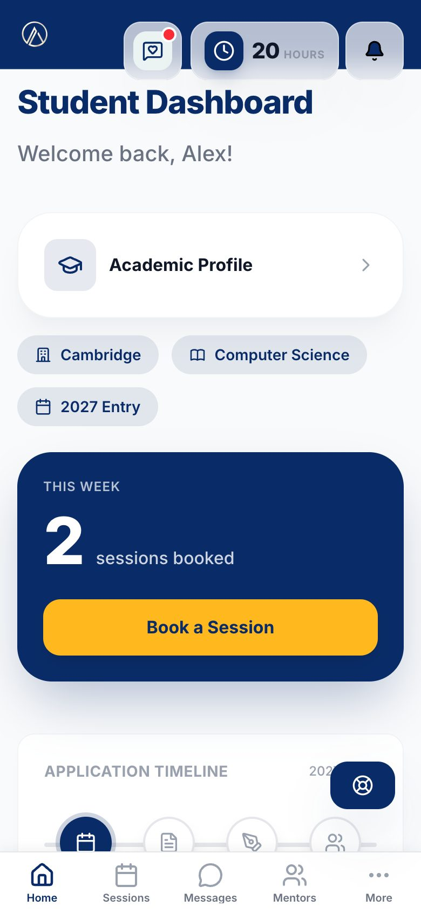
On a phone
3Home
Home is the first page you see after logging in. It gives you a quick view of where things stand.
Your profile and targets. Your target university, course and entry year.
This week. How many sessions you have booked this week, plus the Book a Session button.
Application Timeline. Key dates for your application, with a countdown in days to each one.
Your schedule for the week. A calendar of your upcoming sessions. Click a day to see its sessions and join links.
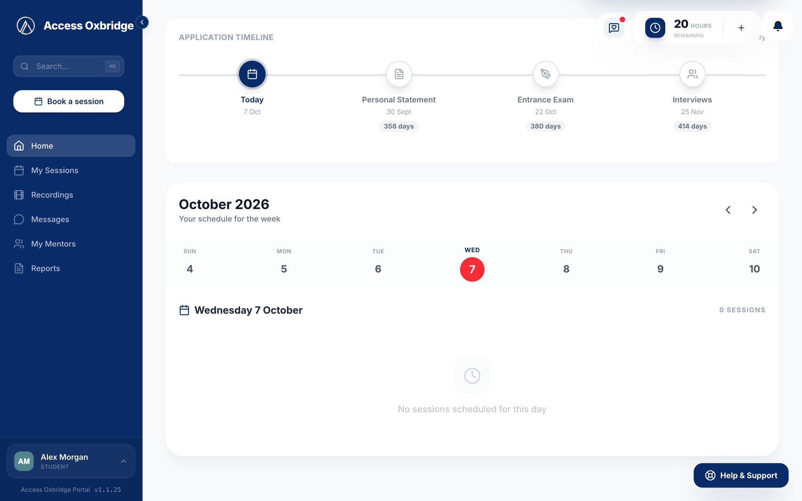
Home, with your timeline and weekly schedule
Your Application Timeline
TodayWhere you are now on the timeline.
›
Personal StatementThe date to have your statement finished and submitted.
›
Entrance ExamSet your real exam date in My Profile so this is accurate.
›
InterviewsWhen college interviews usually take place.
Can't book yet?
If you see Complete Profile instead of Book a Session, your profile isn't finished. If you see Mentor assignment pending, our team is still matching you with a mentor.
4My Profile
Open it from your name at the bottom of the menu. We use your profile to match you with the right mentor, so fill in as much as you can.
Profile photo. Add a photo so your mentor can put a face to your name.
Basic Information. Your school, country, year group and curriculum.
Timezone. Every session time in the portal is shown in this timezone. Make sure it's correct.
Target Goals. Target university, course, application year and entrance exam date.
Subjects. Each subject you take, with your predicted grade.
Interests & Activities. Your academic interests, extracurriculars and any notes for us.
Parent or guardian email (optional). If you add one, we'll send them a progress report every two weeks.
Click Save Profile at the bottom when you're done. You can come back and update it at any time.
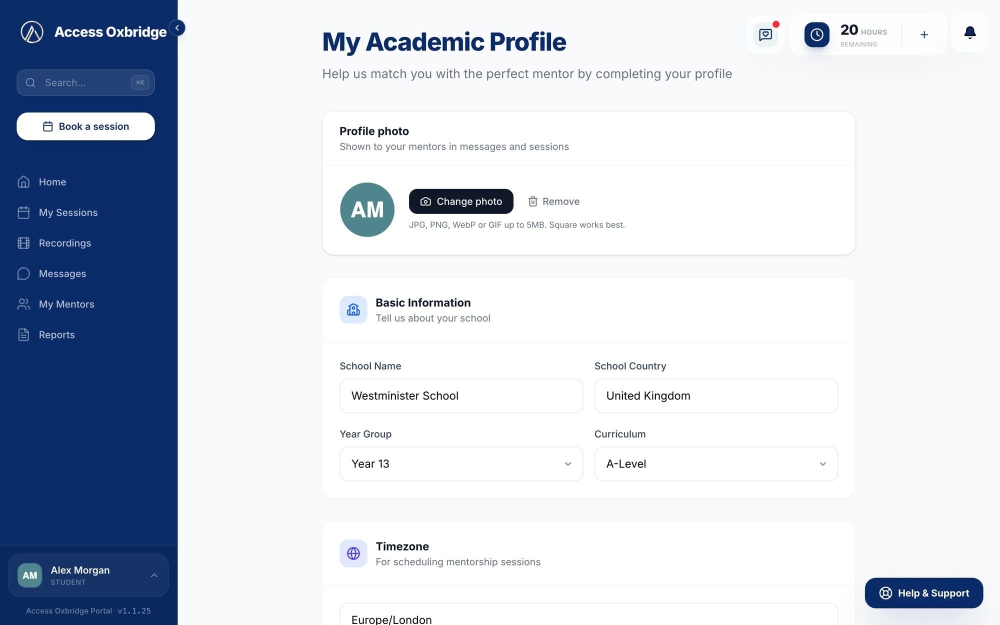
My Profile
Still can't book after saving?
These fields must all be filled in before you can book a session:
School name and country
Year group
Curriculum
Target university
At least one subject with a grade
Timezone
Academic interests
Extracurriculars
5My Mentors
This page shows the mentor, or mentors, our team has matched you with. On each mentor's card you can:
View Profile to read their bio and areas of expertise.
Chat to send them a message.
View Sessions to see your sessions together.
The card also shows how many sessions you've had together and when the last one was. If your mentor ever changes, your previous mentors move to the Past tab.
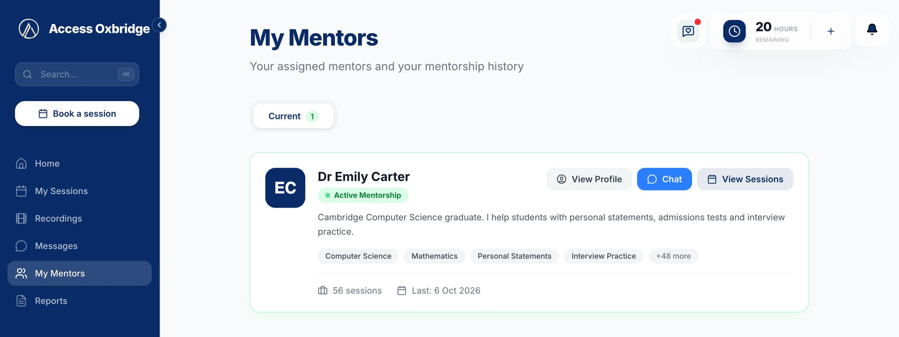
My Mentors
6Session hours
Your hours balance is shown at the top right of every page. Each hour of mentoring uses one hour from your balance. You need hours in your balance to book or join a session.
To get more hours:
Click your hours balance.
Write a short message, for example "I'd like 5 more hours this term."
Click Send to admins.
We'll email you once your hours have been updated.
Running low?
Ask for more hours before you book, so your next session isn't held up.
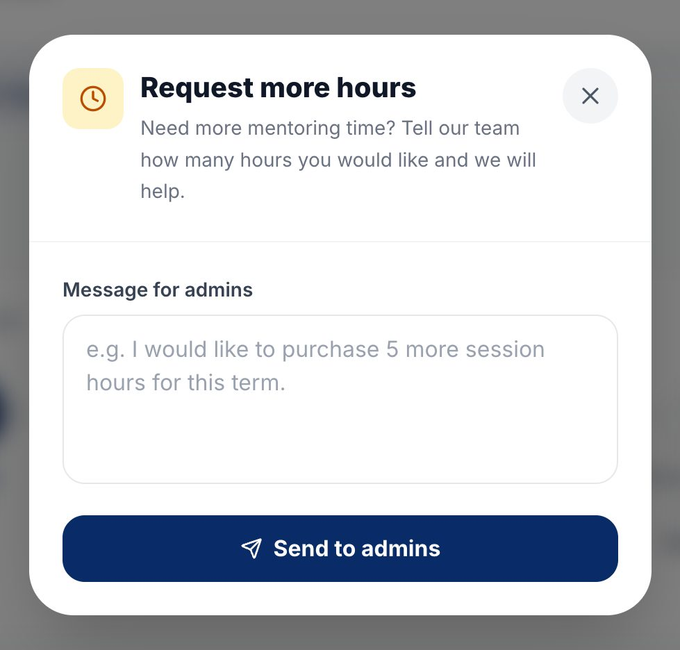
Asking for more hours
7Messages
Messages is where you talk to your mentor and to our team.
Each mentor has their own chat.
Some chats are group chats that include you, your mentor and our team. They are marked Group.
Help & Support is your chat with Claire, our Senior Strategist. Use it for questions about the portal, your hours or your application.
A number next to Messages in the menu means you have unread messages.
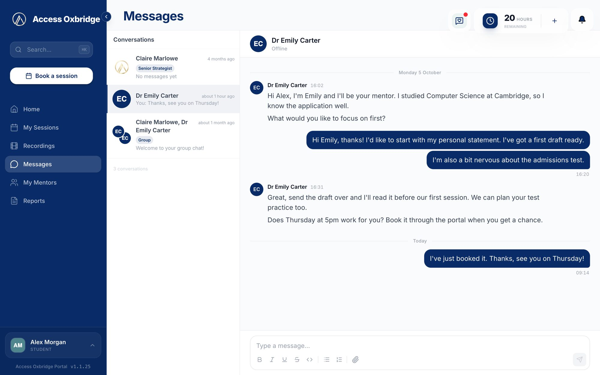
Messages, with a mentor chat open
Writing a message
Type in the box at the bottom of the chat. The toolbar lets you add bold, italics, lists and more. Click the paperclip to attach a file, such as a draft of your personal statement or a practice paper.
Start talking early
Introduce yourself to your mentor as soon as you're matched. Tell them about your goals and what you'd like to cover. The more they know, the better your first session will be.
8Booking a session
Click Book a Session. You'll find it in the menu, on Home and on My Sessions.
If you have more than one mentor, choose who to book with.
Pick a date, a start time and a length (1 or 2 hours), then click Add Time Slot.
Add at least 3 time slots, so your mentor has options.
Click Send Request.
All times are shown in the timezone set in your profile, so you never need to convert them yourself.
Tip
Spread your time slots across different days. It makes it much easier for your mentor to find one that works.
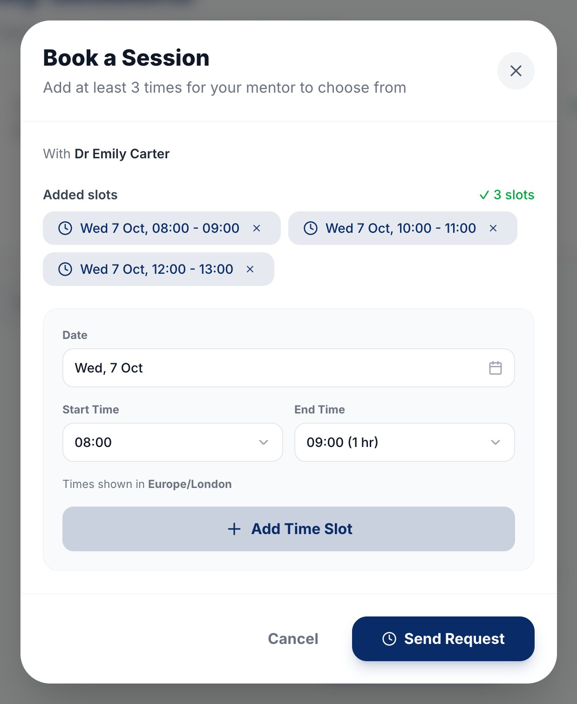
The Book a Session window
Before you book
Your profile is complete.
Our team has matched you with a mentor. You'll see them in My Mentors.
You have hours in your balance, shown at the top right of every page.
What happens next
1. Request sentYour request waits in the Pending tab of My Sessions.
›
2. Mentor picks a timeYour mentor chooses one of your time slots.
›
3. Session confirmedIt moves to Upcoming and shows on your Home calendar.
›
4. Join on the dayClick Join Session to open Zoom.
When your mentor suggests a time
Sometimes your mentor will suggest a session time instead. It appears in the Pending tab, where you can Accept or Decline it. If none of your times suit your mentor, they may message you to agree a different time.
9My Sessions
At the top, Your Application Journey shows how far along your next booking is: requested, matched with your mentor, then scheduled. Below it, your sessions are split into four tabs:
Pending. Requests waiting for your mentor to choose a time. You can cancel your own pending requests here.
Upcoming. Confirmed sessions, with the date and time. A Join Session button appears once the Zoom link is ready.
Current. A session that is happening right now.
Past. Finished sessions, with the recording, report and feedback.
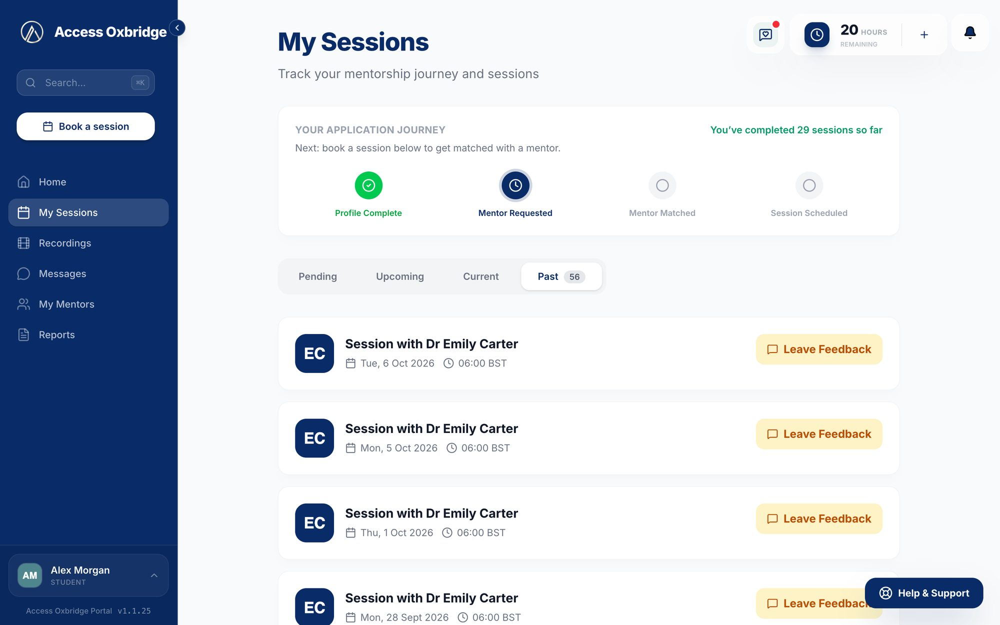
My Sessions, showing the Past tab
Joining a session
Click Join Session to open Zoom. In the hour before your session, the button turns green and shows Starting soon. Join a few minutes early to check your camera and microphone.
Rescheduling
On an upcoming session, click Reschedule, choose a new time and add a short note. Your mentor needs to accept the new time before it changes. You can't reschedule a session once it has started.
If your mentor doesn't join
In the Current tab, click Report and confirm. Only do this once the start time has passed and your mentor still hasn't joined.
10After a session
Once a session ends, it moves to the Past tab. From there you can:
Leave Feedback. Rate the session from 1 to 5 stars and add a comment if you like. It only takes a few seconds and helps us improve.
View Report. Read the report your mentor writes after each session.
Watch Recording. Watch the session again.
Every few sessions you'll also see a short check-in at the top of the page: three quick questions about how things are going. Please fill it in when it appears.
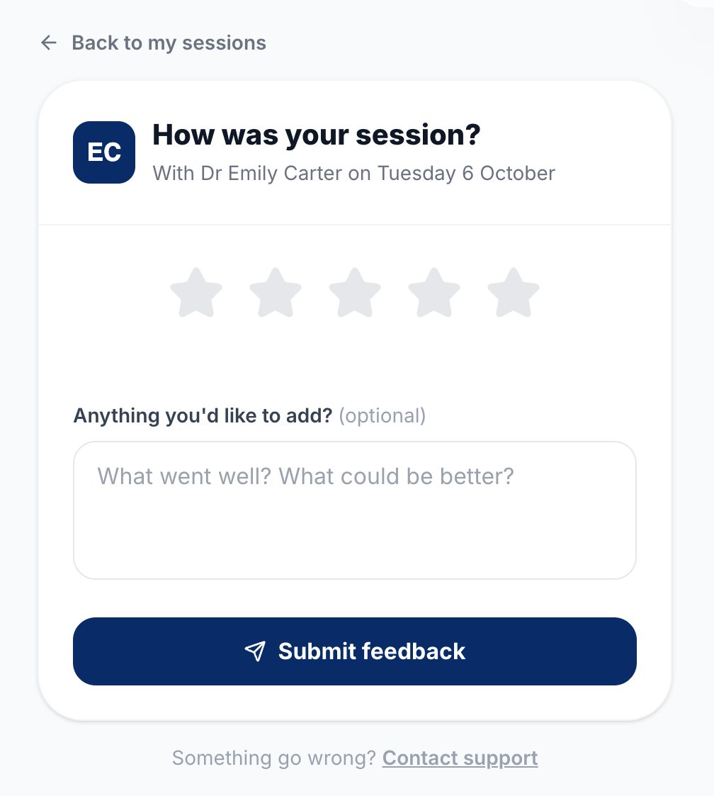
Rating a session
11Recordings
Every recorded session appears here a few minutes after it ends. Click a recording to watch it in the portal. Recordings are for viewing only and can't be downloaded. Rewatching a session is a great way to go over interview practice or anything you found hard.
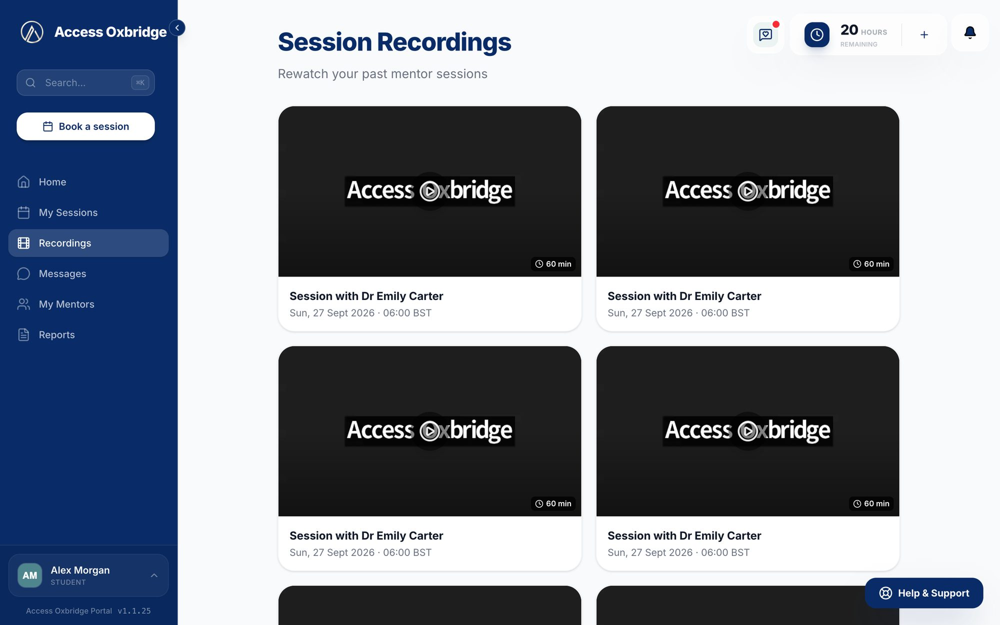
Recordings
12Reports
All your session reports in one place, newest first. Click a report to open it. Each report covers what you worked on, areas to improve and your next steps. If you have a question about anything in it, click Chat with mentor.
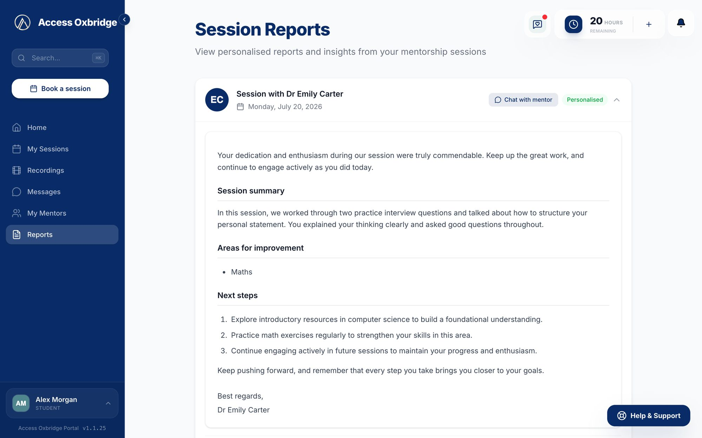
Reports, with one report opened
13Settings
Open Settings from your name at the bottom of the menu. Here you can check your account details, change your timezone and get a link to reset your password by email.
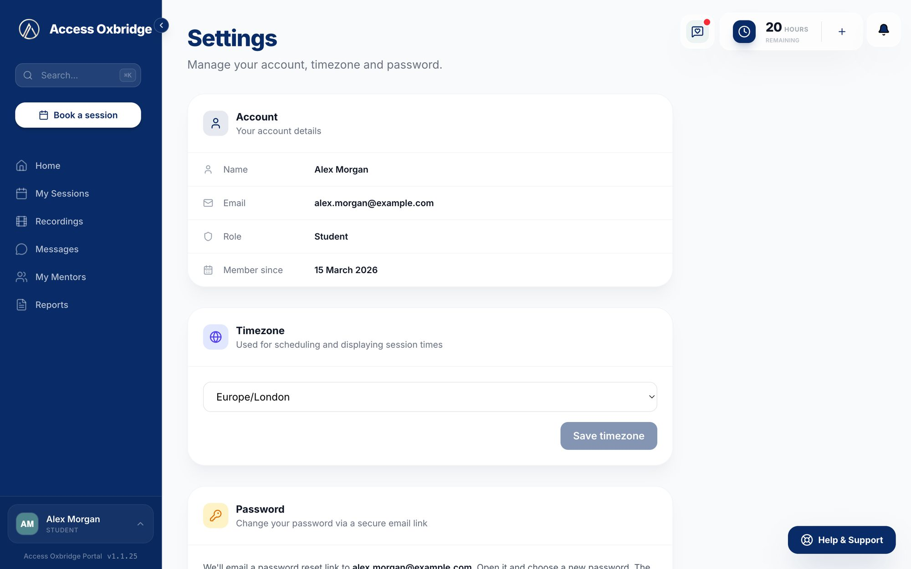
Settings
14Getting help
Click Help & Support at the bottom right of any page, type your message and click Send Message.
Our team will reply in your Help & Support chat in Messages, so you can keep track of the whole conversation in one place.
You can ask us about anything: using the portal, your hours, your mentor or your application.
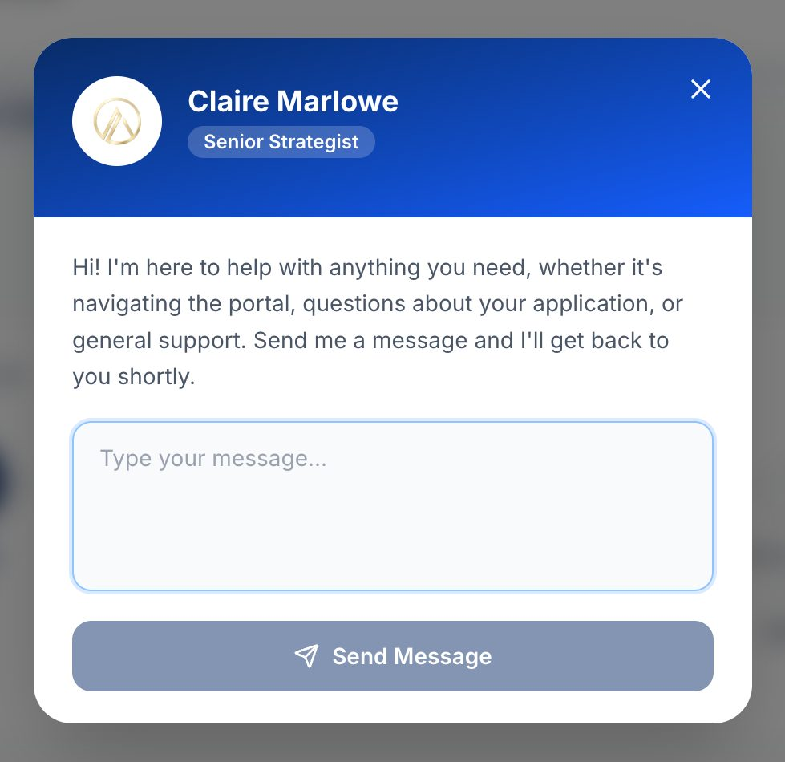
Help & Support
15Common questions
Why can't I book a session?
Check three things: your profile is complete, our team has matched you with a mentor, and you have hours in your balance.
Where do I find the Zoom link?
In My Sessions, on the Upcoming tab. You can also join from the weekly calendar on Home.
How do I know my session is confirmed?
It moves from Pending to Upcoming in My Sessions and appears in the weekly calendar on Home.
Can I change a session time?
Yes. Click Reschedule on an upcoming session and suggest a new time. Your mentor needs to accept it.
The session times look wrong.
Check the timezone in My Profile or Settings. All times in the portal are shown in that timezone.
Can my parents see how I'm getting on?
Yes. Add a parent or guardian email in My Profile and we'll send them a progress report every two weeks.
How do I get more hours?
Click your hours balance at the top right of any page, write a short message and click Send to admins.
What if my mentor doesn't turn up?
Once the start time has passed, go to the Current tab in My Sessions, click Report and confirm. Our team will follow it up.
If you have any questions about the portal or anything in this guide, get in touch at any point. We're here to support you every step of the way.